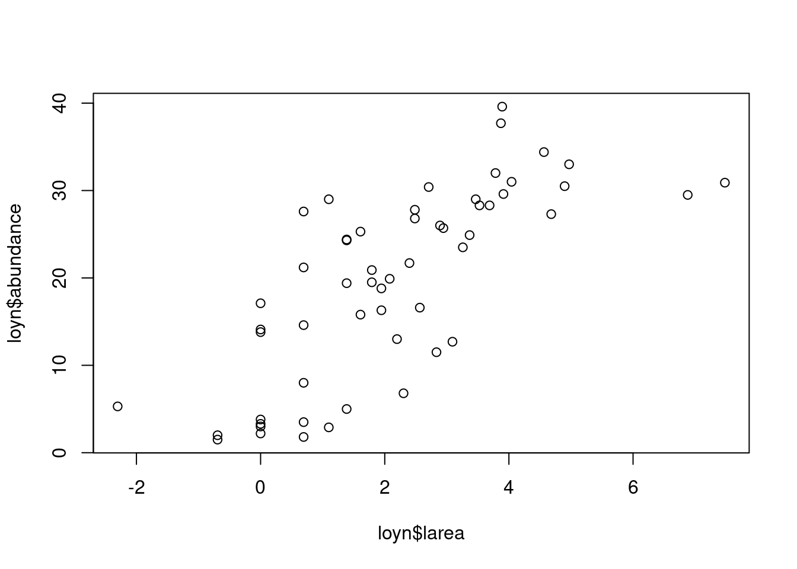
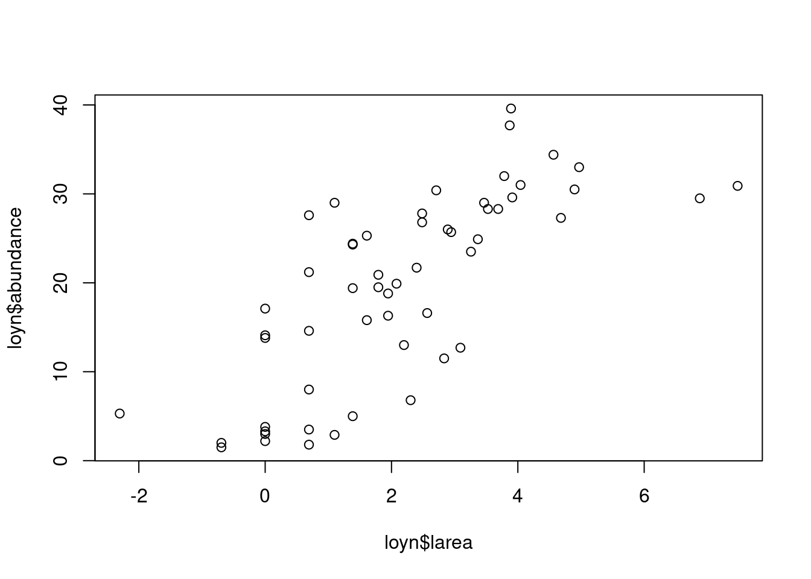
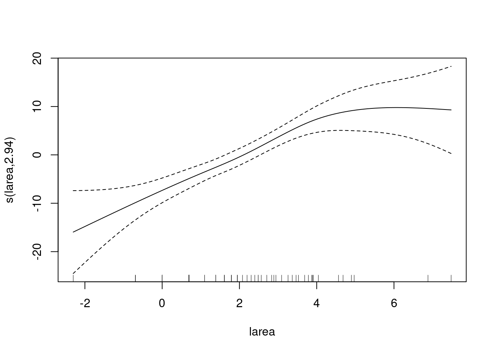
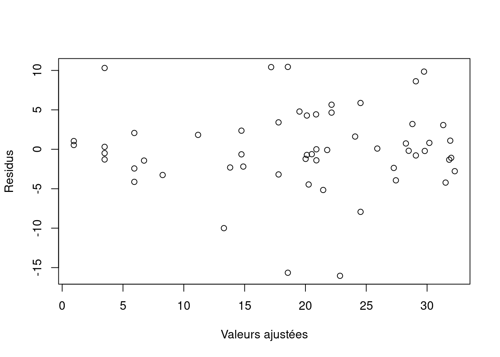

plot(loyn$larea, loyn$abundance)
Le nuage de points de abundance en fonction de larea est présenté ci-dessous:
plot(loyn$larea, loyn$abundance)
Les résidus en fonction de larea (voir chapitre précédent) et l’ajustement des lignes dans la suggèrent tous que l’imposition d’un effet linéaire de larea peut être incorrecte. D’un point de vue biologique, il est également plus logique de supposer que plus les parcelles forestières sont grandes, plus le nombre d’oiseaux est élevé, mais seulement jusqu’à un certain niveau. Un modèle additif généralisé (GAM) est une méthode qui peut être utilisée pour vérifier le type de modèle requis. Si le GAM indique que la fonction de lissage est une ligne droite, nous savons que le modèle de régression linéaire est correct.
Nous utiliserons un GAM avec une distribution gaussienne et appliquerons le modèle suivant: \(abundance_i = \alpha +f_1(larea_i) + f_2(ldist_i) + f_3(lldist_i) + f_4(year_i) + f_5(altitude_i) + factor(graze_i) + \epsilon_i\)
Par défaut, les fonctions de lissage \(f_j\) sont estimées par une spline de régression à plaques minces, mais il existe diverses alternatives comme les splines de régression cubiques ; voir le fichier d’aide ?s. Il n’est pas essentiel de connaître la différence entre tous ces lisseurs, mais cela devient un problème pour les très grands ensembles de données.
library(mgcv)
amodel1 <- gam(abundance ~ s(larea) + s(ldist) + s(lldist) + s(year) + s(altitude) + fgraze, data = loyn)Nous avons délibérément commencé par un modèle qui contient toutes les variables explicatives et non le sous-ensemble de variables explicatives (larea et graze) qui ont été sélectionnées dans le modèle de régression linéaire optimal. La raison en est que certaines variables peuvent avoir un effet non linéaire, ce qui peut les rendre non significatives dans un modèle de régression linéaire. Toutefois, si notre question est : «L’effet de larea dans le modèle de régression linéaire optimal est-il vraiment linéaire ?» par rapport à «Quel est le modèle optimal ?», nous pourrions comparer le modèle de régression linéaire optimal contenant uniquement larea et graze avec un modèle GAM qui contient uniquement une fonction de lissage de larea et graze (en tant que variable nominale).
La commande anova n’applique pas un test F séquentiel comme elle l’a fait pour le modèle de régression linéaire. Au lieu de cela, elle donne le test de Wald (approximatif !) qui montre la signification de chaque terme dans le modèle. Son résultat est le suivant:
anova(amodel1)
Family: gaussian
Link function: identity
Formula:
abundance ~ s(larea) + s(ldist) + s(lldist) + s(year) + s(altitude) +
fgraze
Parametric Terms:
df F p-value
fgraze 4 3.281 0.0202
Approximate significance of smooth terms:
edf Ref.df F p-value
s(larea) 3.030 3.650 8.709 7.16e-05
s(ldist) 2.524 3.160 0.541 0.645
s(lldist) 1.000 1.000 0.219 0.642
s(year) 2.842 3.376 1.384 0.281
s(altitude) 1.000 1.000 0.720 0.401La commande summary donne les valeurs estimées des paramètres de régression pour chaque niveau. Notez que les différents lisseurs ne sont pas significatifs au niveau de 5%. Cela signifie que nous revenons au processus de sélection des données. Là encore, il existe plusieurs approches, voir également la section sur la régression linéaire ci-dessus. Nous pouvons soit comparer des modèles sélectionnés a priori (non abordés ici), soit utiliser des procédures de test d’hypothèse ou un outil de sélection de modèle tel que l’AIC. Dans ce cas, il existe une autre option, que nous mentionnons à la fin de cette section.
L’approche par test d’hypothèse est la plus simple: il suffit d’éliminer du modèle le terme le moins significatif, de réajuster le modèle et de répéter ce processus jusqu’à ce que tous les termes soient significatifs. Il s’agit d’une approche un peu rapide et sale, mais elle est utile si le temps de calcul est long. Vous pouvez également utiliser l’AIC obtenu par la commande AIC(AM1), mais dans gam il n’y a pas d’étape de fonction qui fera le travail pour vous ; vous devez supprimer chaque terme à tour de rôle, écrire l’AIC, et choisir la variable à supprimer du modèle, et répéter ce processus un certain nombre de fois. Ce processus peut prendre beaucoup de temps.
Il existe une autre option. Le degré optimal de lissage est estimé à l’aide d’une méthode appelée validation croisée (Wood, 2006), où un degré de liberté produit une ligne droite et 10 degrés de liberté une courbe fortement non linéaire. Dans la régression linéaire, un terme non significatif consomme encore un degré de liberté. La fonction gam est capable de produire des lisseurs avec 0 degré de liberté, ce qui élimine la nécessité de réajuster le modèle sans les termes. Elle ne fonctionne qu’avec les splines de régression à plaques minces et les splines de régression cubiques. Le code est le suivant:
amodel2 <- gam(abundance ~ s(larea, bs="cs") + s(ldist, bs="cs") + s(lldist, bs="cs") + s(year, bs="cs") + s(altitude, bs="cs") + fgraze, data=loyn)La nouveauté est la partie bs="cs". Elle indique à R d’utiliser la spline de régression cubique avec rétrécissement. Encore une fois, il n’est pas très important pour vous de comprendre les différences entre ces différents types de lisseurs. Dans la pratique, ils se ressemblent. Les lisseurs de plaques minces ont tendance à être légèrement plus linéaires.
anova(amodel2)
Family: gaussian
Link function: identity
Formula:
abundance ~ s(larea, bs = "cs") + s(ldist, bs = "cs") + s(lldist,
bs = "cs") + s(year, bs = "cs") + s(altitude, bs = "cs") +
fgraze
Parametric Terms:
df F p-value
fgraze 4 4.091 0.00675
Approximate significance of smooth terms:
edf Ref.df F p-value
s(larea) 2.369e+00 9.000e+00 4.033 1.41e-06
s(ldist) 2.993e+00 9.000e+00 0.432 0.270
s(lldist) 1.759e-07 9.000e+00 0.000 0.762
s(year) 2.668e+00 9.000e+00 0.450 0.199
s(altitude) 9.151e-08 9.000e+00 0.000 0.594Notez que les lisseurs pour lldist et altitude ont 0 degré de liberté. Cependant, il y a encore du travail à faire car les lisseurs de ldist et year ne sont pas significatifs au niveau de 5%. Si l’on supprime ces deux variables (une à une), on constate que le modèle optimal ne contient plus qu’un effet larea et un effet graze.
Le lisseur pour larea de ce modèle est présenté dans la figure suivante:
amodel3 <- gam(abundance ~ s(larea, bs="cs") + fgraze, data=loyn)
plot(amodel3)
Le processus de validation du modèle devrait suivre pratiquement les mêmes étapes que pour la régression linéaire. Les seules différences sont que les résidus sont obtenus par la commande resid (amodel3) et qu’il n’y a pas de fonction qui trace les résidus par rapport aux valeurs ajustées. Vous devez le faire manuellement en utilisant le code suivant:
e.am3 <- resid(amodel3)
fit.am3 <- fitted(amodel3)
plot(x=fit.am3, y=e.am3, xlab="Valeurs ajustées", ylab="Residus")
Là encore, il est important de tracer les résidus en fonction de chaque variable explicative! Si l’un de ces graphiques montre un schema, vous devez trouver une solution. La dernière question que nous devons nous poser est de savoir si le GAM était nécessaire. Nous nous sommes retrouvés avec le même ensemble de variables explicatives, et l’on peut imaginer une ligne droite à l’intérieur des intervalles de confiance à 95 % de la figure précédente. Les degrés de liberté estimés à 2,79 indiquent également un effet larea presque linéaire. En fait, nous pouvons tester si le GAM est meilleur que le modèle de régression linéaire car les deux modèles contiennent le même ensemble de variables explicatives.
model3 <- lm(abundance ~ larea + fgraze, data=loyn)
amodel3 <- gam(abundance ~ s(larea, bs="cs") + fgraze, data=loyn)
anova(model3, amodel3, test="F")Analysis of Variance Table
Model 1: abundance ~ larea + fgraze
Model 2: abundance ~ s(larea, bs = "cs") + fgraze
Res.Df RSS Df Sum of Sq F Pr(>F)
1 50.000 1730.4
2 48.058 1520.0 1.9415 210.37 3.4258 0.04196 *
---
Signif. codes: 0 '***' 0.001 '**' 0.01 '*' 0.05 '.' 0.1 ' ' 1L’hypothèse nulle sous-jacente est que les deux modèles sont identiques ou, plus mathématiquement, que le lisseur est une ligne droite (1 df). Dans ce cas, nous pouvons rejeter cette hypothèse nulle car le modèle le plus compliqué est le GAM; il est significativement meilleur au seuil de 5%, même s’il a une \(p\)-value peu convaincante de 0,04. Mais nous préférons également le GAM car il ne présente pas de modèles résiduels. Cependant, l’effet non linéaire de larea est principalement dû à deux grands patchs. Il serait utile d’échantillonner davantage de parcelles de ce type à l’avenir.